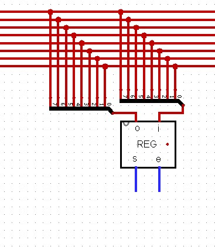
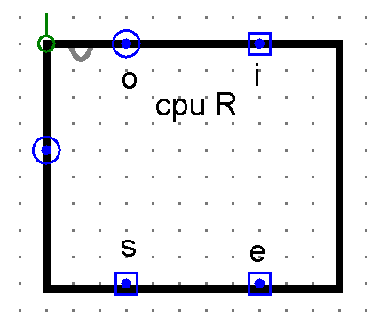

One Wire for Everyone
Sections 10.1 – 10.4 | Estimated time: ~1 hour
10.1 Your parts have never met
What you have. A REGISTER_8BIT from Week 5 that holds a byte and can put it on a wire or let go of it. An ALU_8BIT from Weeks 6 and 7 that computes seven things at once and keeps its flags live. A RAM_16X16 from Week 8 with its MAR. And from Week 9, the shape every processor shares: a datapath that holds and moves values, and a control path that decides which value moves when.
What you can’t do yet. Move a byte from one register to another. Put two registers through the ALU. Your parts sit in separate tabs and nothing connects them.
The obvious fix is a wire from everything to everything. It does not survive arithmetic. Your finished CPU has about ten parts that exchange bytes; connecting every pair takes 45 connections, each 8 bits wide, and every part needs a way to choose which of its many inputs to listen to. Real processors made this choice early: one shared set of wires, called a bus, that every part connects to. Any part can put a byte on it; any part can take a byte from it. The cost is that only one byte can be on it at a time.
What you will be able to do by the end of this week. Run any ALU operation on any two of four registers, by hand, in three moves on one bus, and read the instruction byte that asks for it.
10.2 One wire, many drivers
You already built the hard part. Week 5’s register has two control lines with different jobs:
e(enable) puts the stored byte on the wire. Whilee= 0, the register’s output buffers stop driving and the output floats:xxxxxxxx, not00000000. That is what the controlled buffers in its output stage are for.s(set) takes whatever is on the wire into the register. Whiles= 0 the register ignores its input completely.
Connect five registers’ i and o pins to the same eight wires and you have a bus. Every register can see every byte that crosses it, and none of them is changed by it unless its own s is pulsed. The bus has exactly one rule:
At most one part may have its e high. With none, the bus floats. With two, the bus is in conflict: on every bit where they differ, one part pulls the wire up while the other pulls it down, and Logisim shows the wire red with E. Two drivers are a conflict even when they happen to hold the same byte. Nothing guarantees they will still agree a moment later, and a design that works only while two values agree is not a design.
In Week 6 you met seven operation legs that share one output, and the rule there was the opposite: every unselected leg drives 00000000, the results are ORed, and that works because 0 changes nothing in an OR. That is not a bus. The ALU can use the cheap AND-and-OR arrangement because its decoder guarantees by its structure that only one leg is ever selected. Nothing in the structure of your CPU can promise that only one register is enabled — that depends on what the control unit does from moment to moment — so the bus pays for controlled buffers that can genuinely let go.
10.3 A transfer
Moving a byte from R1 to R3 is a transfer, and it takes four steps in this order. You met it in Week 5; now it is the only way anything moves.
- Raise R1’s
e. R1’s byte is on the bus. - Raise R3’s
s. R3 follows the bus. - Drop R3’s
s. R3 now holds the byte. - Drop R1’s
e. The bus floats again.
The s pulse sits entirely inside the e pulse. Your registers are level-sensitive latches — while s is high they follow their input — so the byte on the bus must already be there when s rises and still be there when it falls. Steps 1 and 4 guarantee it. In Week 11 the clock circuit produces exactly this nesting automatically; until then, you do it with your fingers.
Nothing stops one transfer from having several receivers. Raise R1’s e, pulse the s of R0 and R3 together, and both get the byte. One driver, any number of listeners.
10.4 Building the bus in Logisim
Your bus is eight separate 1-bit wire loops, one per bit, drawn as concentric rectangles around the outside of a new circuit tab. Draw them with the wiring tool half a rectangle at a time, and make them bigger than you think you need — everything else goes inside them, and moving a finished bus is miserable.
Every 8-bit pin that touches the bus — a register’s i, its o, the ALU’s A — connects through a splitter fanned out to eight 1-bit wires, one to each loop. A register therefore needs two fans: one for its input, one for its output.

CPU_REGISTER, below. Its o and i each go through their own splitter fan to all eight loops. The s and e pins point down, away from the bus, toward whatever controls them.A register shaped for the bus: CPU_REGISTER
Your Week 5 REGISTER_8BIT works, but its appearance was drawn for a tab of its own: i on one side, o on the other, the control pins wherever they landed. Placed four times along the top of a bus, that shape sends wires crossing each other between every register and the loops, and between every register and the control lines below it.
So R0–R3 get a new tab, CPU_REGISTER, that changes nothing about the circuit and everything about the drawing. Inside is one instance of your REGISTER_8BIT, with each of its five pins wired straight to a pin of the new tab. Then edit the new tab’s appearance:
oandion the top edge, facing the bus. Each fans out to the eight loops directly above it, bit 0 to the innermost.sandeon the bottom edge, facing down. In your CPU’s layout the registers sit between the bus and the control section, so these two single wires drop straight down to it — this week to REG_SELECT, from Week 11 to the control unit.mem, the stored byte, out one side, where a probe can read it without touching the bus or the control lines.

o and i on top, s and e on the bottom, the stored byte on the left side. Your tab names that side pin mem.This is the Week 4 lesson about circuit appearance doing real work: the gates inside are unchanged, and a dozen parts on one canvas become readable. REGISTER_8BIT itself stays exactly as Week 5 built it — do not edit its appearance, because RAM_BYTE and everything else that instantiates it would change shape too.
Every fan must connect bit 0 to the innermost loop and bit 7 to the outermost, on every part, without exception. Get one fan backwards and that part reads and writes bytes bit-reversed: 00000101 leaves R1 and arrives in R3 as 10100000. Nothing turns red, because nothing is electrically wrong. Build one fan carefully, test it, then copy and paste it for every other port.
Logisim would also let you draw a bus as a single 8-bit-wide wire. This course uses eight loops because every circuit figure for the rest of the term is drawn that way, and because you can see each bit cross the bus. Your parts’ e, s and other control pins stay unconnected stubs for now, wired to input pins you toggle yourself — Assignment 10 lists them.
For buses and register transfers in a second voice, log into your Saylor CS301 account at the CS301 course page and open Unit 5: Designing a Processor. CS301 builds MIPS datapaths with multiplexers rather than a single tri-state bus; this page is the source for your machine.
Where you are
You can move any byte between any registers on one bus, one driver at a time, and you know how to wire that bus in Logisim. Next page: the ALU needs two inputs, and the bus carries one value.